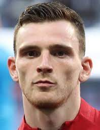

Robertson
His life
Date of birth:
11.03.1994
Country:
Scotland
His career
2014-2017
Hull City
2017-now
Liverpool
Games in Primer League
Appearances:
218
Goals:
8
Asists:
49
Clean sheets:
69
Transfer Value
65 million euros
Trophies with club
Club world cup (Liverpool)
Champions league (Liverpool)
UEFA Super cup (Liverpool)
Primer league (Liverpool)
Copa Amerika (Brazil)
FA cup (Liverpool)
League cup (Liverpool)
His own trophies
Young player of the year (Scotland) 🏆
Most of the asists in rhe season (Primer League) 🏆